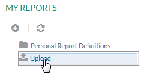
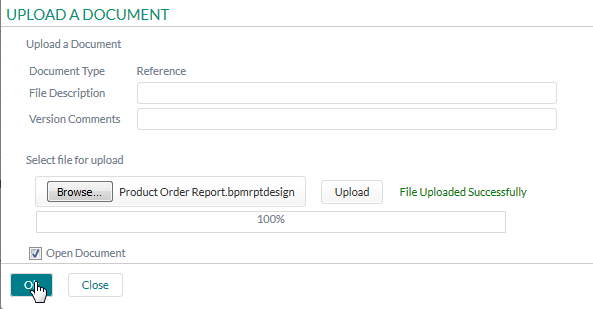

This tutorial demonstrates how to create composite reports by embedding existing report definitions and listing specific record set entries.
In this section demonstrates how to embed report Product Order Report.bpmrptdesign which we created in chapter Creating and Running a Report with Table Layout and computed Column. In case you do not already have this report present in your report folders, you can import it from the following zip file:
You find it in the reports/dat folder. In this location you also find the two composite reports we will create in this tutorial, Composite Report and ProductOrderParameterReport
To upload the existing report definition:


To create our composite report, click the Add icon. Configure the report as follows:
If you go to the Preview tab, you can view the resulting embedded Product Order Report report.
Figure: Resulting Composite Report
Go to the Storage tab and save the composite report created in the preceding sections, e.g. as Composite Report.
Figure: Save the Report Definition
Now we add an overview on specified columns to our our composite report. For each record set we print the customer name, Id and ordered item.
<h1>Customer Record Sets</h1>
<ul ng-repeat="record in recordSet">
<li><b>Customer</b>: {{record.CustomerName}} - {{record.CustomerId}}</li>
<li><b>Item ordered by Customer</b>: {{record.OrderedItem}}</li>
</ul>
Go to the Preview tab to view the result. On top we see the embedded report, followed by the list of the specified columns for each record set. Note that for large report definition previews you need to scroll down to view the entire result.
Figure: Composite Report with record set items
Now we like to group the record sets by the name of the customers.
Before we can use the parameter for CustomerName, we need to add a parameter filter to the Product Order Report:
We add code to our composite report definition to print an embedded ProductOrderParameterReport for each customer.
<h1>Customer Record Sets</h1>
<ul ng-repeat="record in recordSet | unique:'CustomerName,CustomerId'">
<li><b>Report for Customer</b>: {{record.CustomerName}} - {{record.CustomerId}}<br />
<br />
<sd-report-frame parameters="{{'CustomerName='+record.CustomerName}}"
path="/realms/carnot/users/frank/documents/reports/designs/ProductOrderParameterReport.bpmrptdesign">
</sd-report-frame></li>
</ul>
In the Preview tab view the result. For each customer, the embedded report is displayed.
Figure: Embedded Report with Parameter